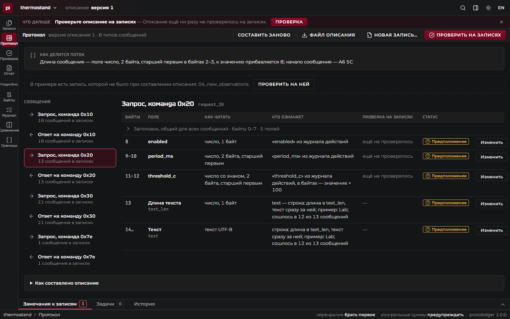
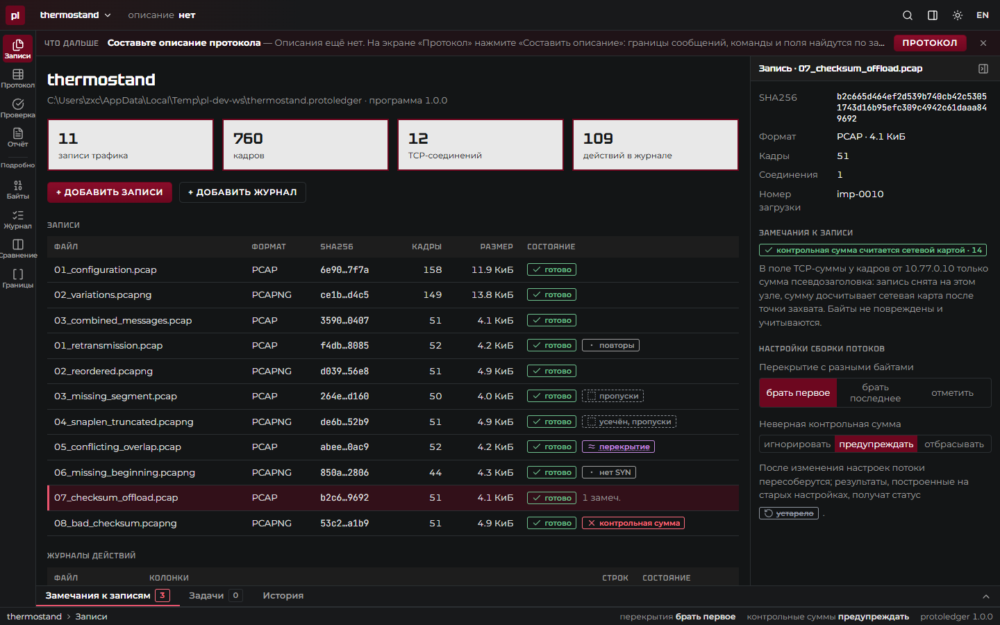
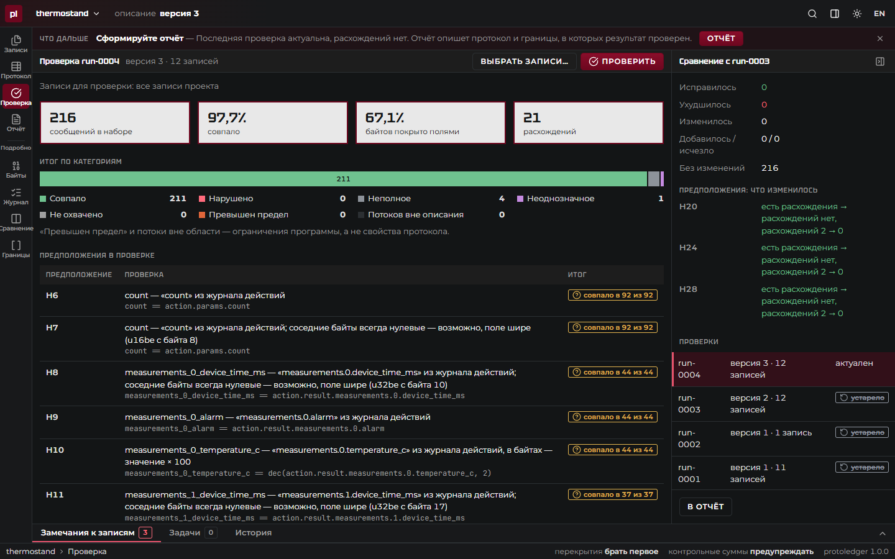
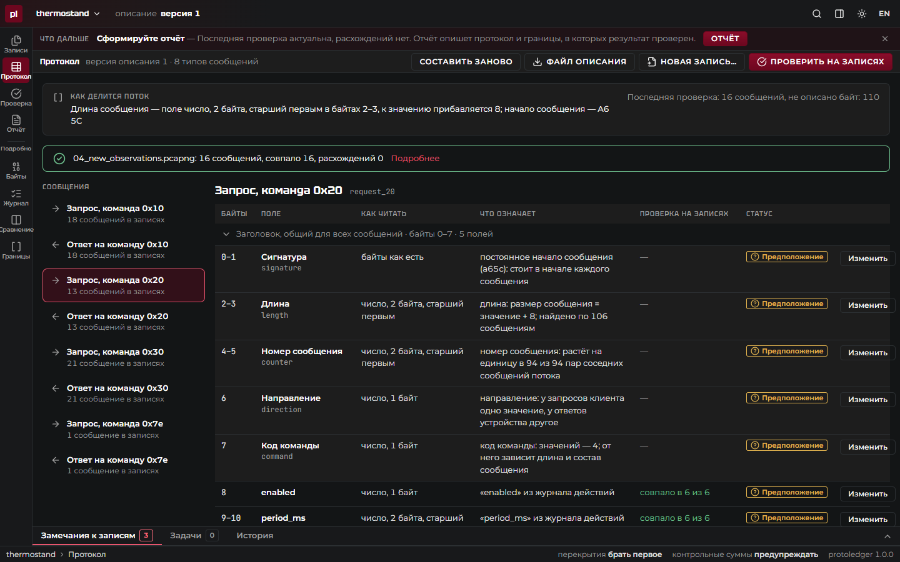
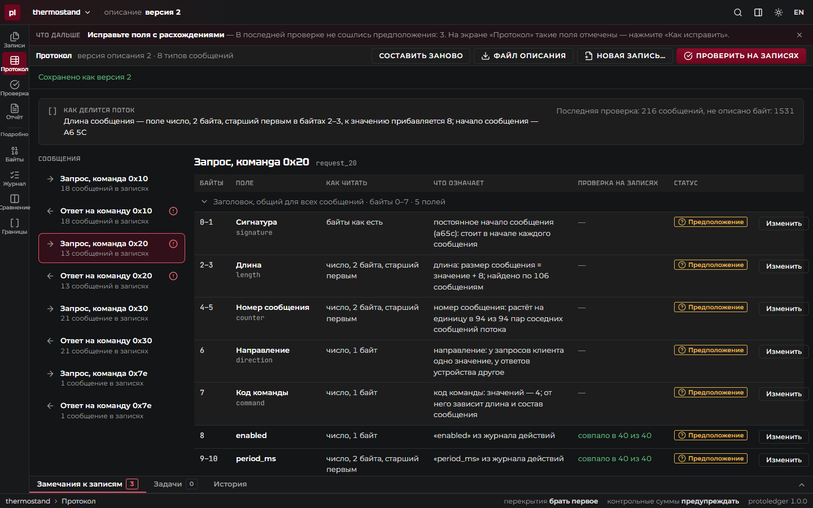
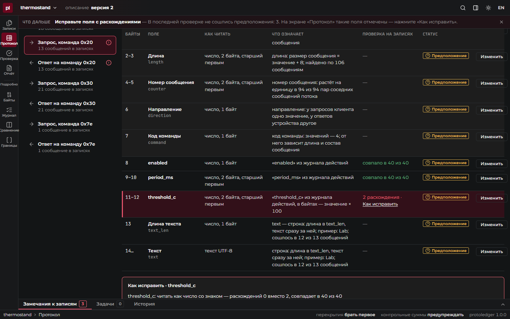

Журнал исследования протокола: от записей трафика к проверяемому, повторно применимому и переносимому описанию обмена.
Подключить систему к устройству без документации на протокол — обычная задача интеграции: контроллеры, измерительные приборы, IoT, устаревшие сервисы.
Сегодня это Wireshark, hex-редактор, заметки и одноразовые скрипты.


Повторы, пропуски, обрезанные кадры и offload видны явно. «Составить описание»: сигнатура A6 5C, длина в байтах 2–3, код команды в байте 7, поля связаны с параметрами журнала: порог 19 °C → 07 6C = 1900.


Описание применяется ко всем записям: 200 сообщений, у полей — «совпало в 40 из 40». Запись, которой не было при составлении описания, разбирается без правки: 16 из 16.

Порог прочитан как число без знака: на пороге −2,5 °C байты FF 06 дают 65 286 вместо −250 — 2 расхождения с конкретными сообщениями.

«Как исправить»: читать как число со знаком — расхождений 0 вместо 2. Новая версия описания, проверка заново: совпало в 40 из 40.
Окно приложения (.msi, .deb, AppImage), браузер (docker compose up или бинарник serve), командная строка: apply, verify, report, draft.
Состояние — папка проекта: текстовые YAML/JSON и неизменные копии записей с sha256. Перенос — копирование папки, protoledger verify воспроизводит проверки.
unsafe, без unwrap на данных| «Термостенд», набор организаторов | |
|---|---|
| Записей / действий журнала | 11 / 109 |
| Сообщений после уточнения, расхождений | 216 / 0 |
| Дополнительная запись без правки описания | 16 из 16 |
| Черновик описания без знаний о протоколе | 16 из 16 |
| Диагностические записи: дефект распознан | 8 из 8 |
| Modbus и MQTT — тот же движок, без кода о них | эталоны в CI |
| Чужая запись 4SICS (Modbus/TCP) | 19 из 19 |
| Профиль ТЗ: 100 МиБ, 250 тыс. кадров, 1000 соединений, ответы до 64 КиБ; 4 vCPU / 8 ГиБ | |
|---|---|
| Разбор записи (CLI) | 0,20 с |
| Импорт в проект: копия, sha256, сборка | 0,80 с |
| Проверка 235 тыс. сообщений с предположениями | 0,78 с |
| Отчёт | 0,02 с |
| Пик памяти движка | 200 МиБ |
| sleepyhead-dev | Backend, DevOps |
| OddS-Programming | Backend |
| rinna32 | Frontend |
| sky1768205 | Frontend |
Репозиторий:
github.com/protoledger/protoledger
Релиз v1.0: установщики Windows и Linux, бинарники — страница Releases
Запуск: git clone --recursive → docker compose up --build → localhost:8080
Как пользоваться: docs/guide.md · проверка ТЗ: docs/requirements.md